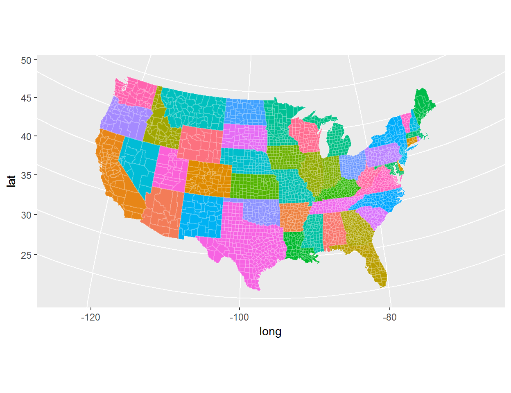
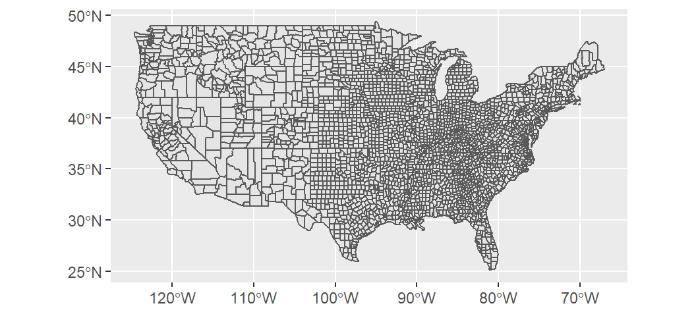
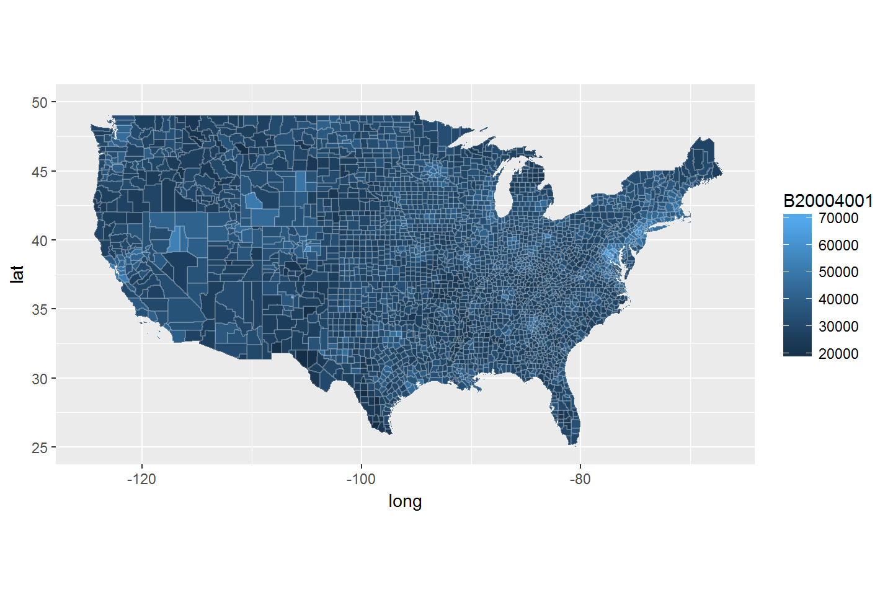
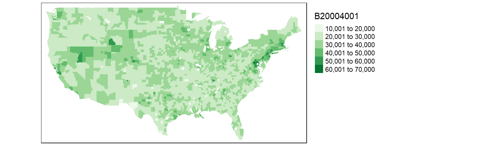
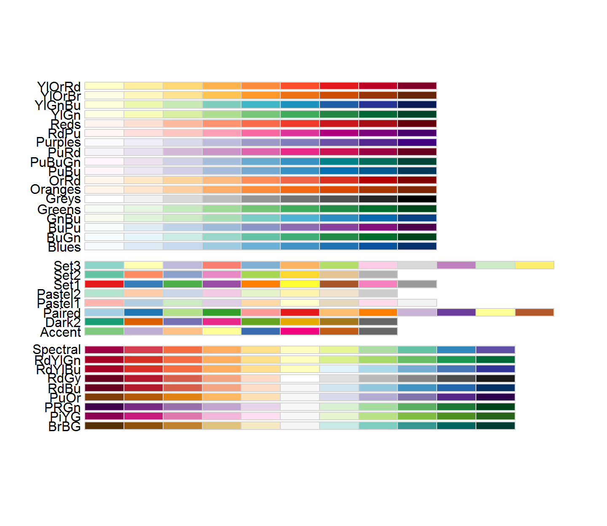
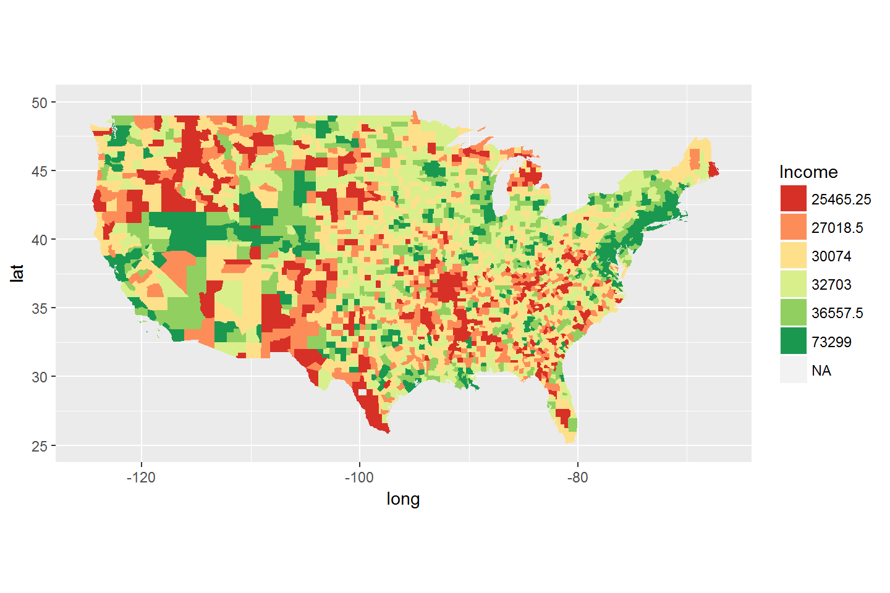

Mapping variables
Variables can be mapped in R using readily available CRAN packages such as rgdal and maps. The focus of this tutorial will be on mapping polygon vector (aka areal) data and not on raster (aka field) data.
Using the maps package
Generating a basic map
Mapping values requires two datasets: the values to be mapped and the spatial boundaries of the areas being mapped. The maps package offers R-ready maps for US states/counties and administrative boundaries for other countries such as Canada, France and Italy.
In the following example we will use ggplot to draw the US counties map. We will also color the counties based on the state they are located in. The state name column is labeled region and the county name column is labeled subregion.
library(ggplot2)
library(maps)
# Load the county data from the maps package
cnty <- map_data("county")
# Plot the counties
ggplot(cnty, aes(long,lat, group = group)) +
geom_polygon(aes(fill = region), colour = rgb(1,1,1,0.2)) +
theme(legend.position="none") +
coord_quickmap()The x and y values are assigned the long and lat columns that store the coordinate values for each vertex that delineates a county. The group parameter tells ggplot which polygon (county) a vertex is defining. The geom_polygon() function generates filled areas from those vertices. The colour parameter defines the polygon outline color. The option legend.position="none" prevents the legend from being displayed and the coord_quickmap() function forces the aspect ratio to approximate that of the Mercator projection.
If you want to change the map projection, you can substitute coord_quickmap() with coord_map(). The latter accepts as parameter projections available in the the mapproj package. For example, to project the continental US into a Bonne projection modify the above chunk as follows:
ggplot(cnty, aes(long,lat, group = group)) +
geom_polygon(aes(fill = region), colour = rgb(1,1,1,0.2)) +
theme(legend.position="none") +
coord_map("bonne", param=45) 
If we want to omit the background grid, we modify the chunk as follows (note that the theme() options gets overridden by the theme_void() option requiring that we pass the show.legend = FALSE option to geom_polygon).
ggplot(cnty, aes(long,lat, group = group)) +
geom_polygon(aes(fill = region), show.legend = FALSE, colour = rgb(1,1,1,0.2)) +
coord_map("bonne", param=45) +
theme_void()
Joining income table to the map by county and state names
The next step is to join a dataset to the counties map. We will use the income-by-gender-education dataset used earlier in the course and limit the data to median income per person (B20004001 column).
library(dplyr)
df <- read.csv("http://mgimond.github.io/ES218/Data/Income_education.csv")
df1 <- df %>% select(subregion=County, region=State, B20004001 )Next, we need to join the census data to the county map using two columns: state name and county name (or region and subregion columns). Let’s compare the two dataframes by viewing the first few rows of each.
head(cnty) long lat group order region subregion
1 -86.50517 32.34920 1 1 alabama autauga
2 -86.53382 32.35493 1 2 alabama autauga
3 -86.54527 32.36639 1 3 alabama autauga
4 -86.55673 32.37785 1 4 alabama autauga
5 -86.57966 32.38357 1 5 alabama autauga
6 -86.59111 32.37785 1 6 alabama autaugahead(df1) subregion region B20004001
1 Autauga al 35881
2 Baldwin al 31439
3 Barbour al 25201
4 Bibb al 29016
5 Blount al 32035
6 Bullock al 26408We note two problems. first, the cnty object encodes states using their full name and not their two letter abbreviation. Second, the county names in cnty are in all lower case. Before attempting to join the dataframes, we must first fix these discrepancies. We will choose to modify df so that its state and county names match those in the cnty (map) dataframe.
We will first create a state name/abbreviation look-up table using the built-in state.name and state.abb objects. Note that using these pre-existing objects will require that we add the District of Columbia to the table since it’s not present in either data objects.
st <- data.frame(region=tolower(state.name), State = tolower(state.abb))
st <- bind_rows(st, data.frame(region="district of columbia", State="dc") )Next, we join the st look-up table to df then make the additional changes needed to join the census data to the counties map. Note that we are overwriting the earlier instance of df1.
df1 <- df %>%
inner_join(st, by="State") %>%
mutate(subregion = tolower(County)) %>%
select(subregion, region, B20004001 )We can now join df1 to cnty.
cnty.df1 <- inner_join(cnty, df1, by=c("region", "subregion") )Now let’s map the income distribution.
ggplot(cnty.df1, aes(long, lat,group = group)) +
geom_polygon(aes(fill = B20004001), colour = rgb(1,1,1,0.2)) +
coord_quickmap()
You may notice that the counties map does not seem complete; most notable is the absence of all Louisiana counties. Let’s look at the rows in cnty.df1 associated with the state of Louisiana.
filter(cnty.df1, region == "louisiana")[1] long lat group order region subregion B20004001
<0 rows> (or 0-length row.names)There are no rows returned. This suggests that the Louisiana counties did not properly join. Let’s compare the Louisiana county names between df1 and cnty.
df1 %>% filter(region == "louisiana") %>% select(subregion) subregion
1 acadia parish
2 allen parish
3 ascension parish
4 assumption parish
5 avoyelles parish
6 beauregard parish
7 bienville parish
8 bossier parish
9 caddo parish
10 calcasieu parish
11 caldwell parish
12 cameron parish
13 catahoula parish
14 claiborne parish
15 concordia parish
16 de soto parish
17 east baton rouge parish
18 east carroll parish
19 east feliciana parish
20 evangeline parish
21 franklin parish
22 grant parish
23 iberia parish
24 iberville parish
25 jackson parish
26 jefferson parish
27 jefferson davis parish
28 lafayette parish
29 lafourche parish
30 lasalle parish
31 lincoln parish
32 livingston parish
33 madison parish
34 morehouse parish
35 natchitoches parish
36 orleans parish
37 ouachita parish
38 plaquemines parish
39 pointe coupee parish
40 rapides parish
41 red river parish
42 richland parish
43 sabine parish
44 st. bernard parish
45 st. charles parish
46 st. helena parish
47 st. james parish
48 st. john the baptist parish
49 st. landry parish
50 st. martin parish
51 st. mary parish
52 st. tammany parish
53 tangipahoa parish
54 tensas parish
55 terrebonne parish
56 union parish
57 vermilion parish
58 vernon parish
59 washington parish
60 webster parish
61 west baton rouge parish
62 west carroll parish
63 west feliciana parish
64 winn parishcnty %>% filter(region == "louisiana") %>% select(subregion) %>% unique() subregion
1 acadia
45 allen
67 ascension
106 assumption
145 avoyelles
211 beauregard
243 bienville
279 bossier
372 caddo
461 calcasieu
493 caldwell
527 cameron
568 catahoula
666 claiborne
686 concordia
791 de soto
847 east baton rouge
897 east carroll
950 east feliciana
978 evangeline
1021 franklin
1098 grant
1145 iberia
1203 iberville
1258 jackson
1274 jefferson
1340 jefferson davis
1382 lafayette
1430 lafourche
1498 la salle
1547 lincoln
1573 livingston
1619 madison
1687 morehouse
1737 natchitoches
1823 orleans
1888 ouachita
1922 plaquemines
2044 pointe coupee
2118 rapides
2205 red river
2248 richland
2306 sabine
2354 st bernard
2435 st charles
2474 st helena
2493 st james
2515 st john the baptist
2551 st landry
2596 st martin
2681 st mary
2752 st tammany
2797 tangipahoa
2835 tensas
2906 terrebonne
2982 union
3009 vermilion
3070 vernon
3117 washington
3137 webster
3174 west baton rouge
3213 west carroll
3253 west feliciana
3307 winnIt turns out that Louisiana does not divide its administrative areas into counties but parishes instead. The income data (originally downloaded from the Census Bureau) follows through with that designation convention by adding the word “parish” to each of its administrative area names. We therefore need to remove all instances of parish in the subregion names associated with Louisiana. We will therefore need to recreate the df1 object:
library(stringr)
df1 <- df %>%
inner_join(st, by="State") %>%
mutate( subregion = tolower(County) ,
subregion = ifelse(region=="louisiana",
str_replace(subregion, " parish", ""), subregion)) %>%
select(subregion, region, B20004001 )Let’s re-join the dataframes and re-plot the map.
cnty.df1 <- inner_join(cnty, df1, by=c("region", "subregion") )
ggplot(cnty.df1, aes(long, lat,group = group)) +
geom_polygon(aes(fill = B20004001), colour = rgb(1,1,1,0.2)) +
coord_quickmap()
Most of Louisiana’s parishes are now mapped, but we are still missing a few parishes as well as a few counties. This is a result of differences in spelling for two-word county and parish names. For example, df1 encodes St. Lucie county (Florida) as st. lucie whereas cnty omits the dot and encodes it as st lucie. Fixing these discrepancies will require additional labor. At this point, it may prove more fruitful to do away with state/county names as joining keys and use FIPS county codes instead. FIPS (Federal Information Processing Standards) codes assign each county/state a unique five number designation thus making it easier to join data to spatial features. However, neither our census data table nor the built-in counties map have FIPS codes. We will download another version of the income data (one that has FIPS codes). Note that FIPS codes are normally part of datasets provided by the Census Bureau. The maps package has a dataset called county.fips that can be used to match state/county names in the county map to FIPS codes.
Joining income table by FIPS code
Let’s download the FIPS version of the dataset. Note that we will not need to modify/add columns to the data since we will be joining this table to the county map using the FIPS code.
df <- read.csv("http://mgimond.github.io/ES218/Data/Income_education_with_FIPS.csv")
df1 <- df %>% select(FIPS, B20004001 )Next, we’ll load the county.fips dataset.
# Load the county.fips dataset
data(county.fips)
head(county.fips) fips polyname
1 1001 alabama,autauga
2 1003 alabama,baldwin
3 1005 alabama,barbour
4 1007 alabama,bibb
5 1009 alabama,blount
6 1011 alabama,bullockNote that the state and county names are aggregated into a single column; this does not match the data structure in cnty where states and counties are stored in separate columns. This will require some minor data prepping.
cnty2 <- cnty %>%
mutate(polyname = paste(region,subregion,sep=",")) %>%
left_join(county.fips, by="polyname")Now that the FIPS codes are part of the county map dataframe, let’s join the income data table to the county map, then map the income values.
cnty2.df1 <- inner_join(cnty2, df1, by=c("fips" = "FIPS") )
ggplot(cnty2.df1, aes(long, lat,group = group)) +
geom_polygon(aes(fill = B20004001), colour = rgb(1,1,1,0.2)) +
coord_quickmap()This is an improvement over the last map. But there are still a few counties missing. After a closer scrutiny of the data, it seems that the county.fips table splits some counties into two or more sub-regions. For example, Accomack county (Virginia) is split into two regions (and thus into two different names):
county.fips %>% filter( grepl("^virginia,accomack", polyname) ) fips polyname
1 51001 virginia,accomack:main
2 51001 virginia,accomack:chincoteagueFixing these discrepancies would require manual intervention and time. Another work around is to use the Census Bureau’s map files instead of maps’s built-in map. We will cover this in the next section.
Working with external GIS files
Reading a shapefile into R
The Census Bureau maintains its own library of administrative boundary shapefiles (shapefiles are popular map data formats). This may prove to be the best map source to use since its areal units are designed to match the records in the income data table. Loading a shapefile can easily be accomplished using the readOGR() function from the rgdal package. One option is to download the shapefile from the Census Bureau’s website (usually in a zipped format) then unpack it in a local project folder before reading it into the current session with readOGR(). But we can maximize the replicability of the workflow by writing a chunk of code that will download the zipped shapefile into a temporary directory before unzipping it and loading the shapefile into an active R session as shown below.
library(rgdal)
tmp <- tempdir()
link <- "http://www2.census.gov/geo/tiger/GENZ2010/gz_2010_us_050_00_20m.zip"
filename <- basename(link)
download.file(link, filename)
unzip(filename, exdir = tmp )
shapefile <- readOGR( dsn=tmp, layer = tools::file_path_sans_ext(filename) )OGR data source with driver: ESRI Shapefile
Source: "C:\Users\mgimond\AppData\Local\Temp\RtmpEfNfGK", layer: "gz_2010_us_050_00_20m"
with 3221 features
It has 6 fieldsThe shapefile is unzipped into a temporary folder, tmp, then read from that same directory and stored in a SpatialPolygonsDataFrame object called shapefile. The chunk tools::file_path_sans_ext(filename) extracts the name of the zip file (minus the extension) which turns out to also be the name of the shapefile. Note that if the zip file was manually unpacked in a project folder then the only command that would have needed to be executed is the readOGR function as in readOGR( dsn="../Data", layer = "gz_2010_us_050_00_20m" ) where the dsn= parameter points to the directory where the shapefile resides. Note too that the shapefile’s extension is omitted from the name passed to the layer= parameter.
The Census shapefile has a field called GEO_ID that includes the county FIPS codes along with other superfluous county ID values. We only need the five digit county FIPS code so we’ll extract these codes into a new column called FIPS. We will also assign a unique ID value to each row of the dataset for use in a subsequent fortify() function call.
shapefile$FIPS <- as.numeric(substr(shapefile$GEO_ID, 10, 14))
shapefile$id <- rownames(shapefile@data)To plot the shapefile in ggplot, we need to convert the SpatialPolygonsDataFrame object to a dataframe using the fortify() function.
cnty2 <- fortify(shapefile, id="id")Next we can append the income table to the new cnty2 object.
cnty2.cs <- cnty2 %>%
inner_join(shapefile@data, by="id") %>%
inner_join(df1, by="FIPS")Generating a continuous color scheme
Now we can plot the income distribution map.
ggplot(cnty2.cs, aes(long, lat,group = group)) +
geom_polygon(aes(fill = B20004001), colour = rgb(1,1,1,0.2)) +
coord_quickmap() + xlim(-125, - 67) + ylim( 25,50 )
Depending on the size of your output extent, you might find the county outlines distracting–especially in the northeastern region where the county sizes are so small. We can omit the outline by setting the colour parameter to NA.
ggplot(cnty2.cs, aes(long, lat,group = group)) +
geom_polygon(aes(fill = B20004001), colour = NA) +
coord_quickmap() + xlim(-125, - 67) + ylim( 25,50 ) 
ggplot defaults to a continuous color scheme that ranges from a dark blue to a light blue. Continuous color schemes can be modified in ggplot by using the scale_fill_gradient function. For example, to use a light yellow to dark green color scheme modify the above chunk of code as follows:
ggplot(cnty2.cs, aes(long, lat,group = group)) +
geom_polygon(aes(fill = B20004001), colour = NA) +
coord_quickmap() + xlim(-125, - 67) + ylim( 25,50 ) +
scale_fill_gradient(low="lightyellow2", high="darkgreen")
To see a list of available color names in R, type colours() at the console.
Generating a discrete color scheme
You can also create a discrete color scheme–i.e. one where the number of colors are fixed by a finite set of income value intervals. For example, to split the income values across six intervals (e.g. $0 to $20000, $20000 to $30000, $30000 to $40000, $40000 to $50000 , $50000 to $60000 and $60000 to $75000) we can use the cut() function to assign each income value in the table to one of the intervals, then add that interval value to the ctny2.cs map data frame object.
interv <- c(0,20000,30000, 40000,50000, 60000, 75000)
cnty2.cs$Income <- cut(cnty2.cs$B20004001, breaks = interv , labels = paste(interv[-1]))The labels= parameter allows us to define the output interval names. Here we assign the interval’s top dollar value to the interval names. Note that we could have created fancier intervals such as $0 to $20k, $20k to $30k, etc…
Next we’ll map the data, but first we need to change the coloring scheme since we are now using a discrete color scheme as opposed to a continuous one. Cynthia Brewer of Penn State designed a website called http://colorbrewer2.org/ that recommends discrete color schemes to use for different map effects. Defining the colors, especially for a sequential color scheme where the hue is kept constant while its lightness level is modified, is not trivial. Fortunately, her color scheme recommendations are available in ggplot via the scale_fill_brewer() function. To see a list of Brewer color schemes, simply type display.brewer.all() in the console window. Note that we will need to load the RColorBrewer package first.
library(RColorBrewer)
display.brewer.all()
We’ll choose the YlGn color scheme. In case you did not run the last code chunk, we’ll load the RColorBrewer package once more.
library(RColorBrewer)
ggplot(cnty2.cs, aes(long, lat,group = group)) +
geom_polygon(aes(fill = Income), colour = NA) +
coord_quickmap() + xlim(-125, - 67) + ylim( 25,50 ) +
scale_fill_brewer(palette = "YlGn")
Generating a divergent color scheme
We might choose to map the income distribution using a divergent color scheme where we compare the counties to some overall value such as the counties’ median. We can use the quantile() function to break the income data into its percentiles. This will be helpful in generating symmetrical intervals about the median.
inc.qt <- quantile(df1$B20004001, probs = c(0, 0.125, .25, 0.5, .75, .875 , 1 ))We’ll create new income intervals centered on the median of 30767.
cnty2.cs$Income <- cut(cnty2.cs$B20004001, breaks = inc.qt , labels = paste(inc.qt[-1]))A divergent color scheme consists of two different hues whose lightness values converge towards some central value (the median income in our case). We’ll use Brewer’s red-to-green color palette RdYlGn for this next map.
library(RColorBrewer)
ggplot(cnty2.cs, aes(long, lat,group = group)) +
geom_polygon(aes(fill = Income), colour = NA) +
coord_quickmap() + xlim(-125, - 67) + ylim( 25,50 ) +
scale_fill_brewer(palette = "RdYlGn")
The divergent map gives us a different handle on the data. Here, we can identify the poorer than average regions such as the southeast and parts of the Mississippi river region as well as the wealthier regions such as the northeast (with the exception of Maine).
 Manny Gimond (2017)
Manny Gimond (2017)